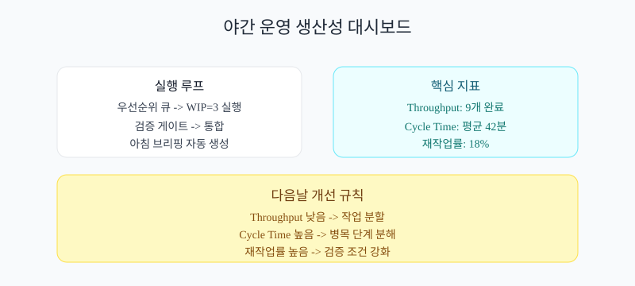

게임 경제 밸런스를 지표로 설계하는 방법
소스·싱크, 물가, 분포 지표로 경제를 반복 튜닝하는 운영
경제 밸런스를 숫자로 다루는 관점
이 주제는 왜 자꾸 추상적으로 느껴질까?
경제는 감각이 아니라 흐름 관리야. 유입과 소모를 같이 봐야 안정돼.
핵심: 추상 판단을 기준어와 지표로 쪼개면 초보자도 바로 실행할 수 있어.
도시 수도망 비유
공급만 늘리면 홍수, 배수만 늘리면 가뭄이 오듯 경제도 균형이 핵심이야.
공급만 늘리면 홍수, 배수만 늘리면 가뭄이 오듯 경제도 균형이 핵심이야.
시각화: 문제를 구조화하는 시작점

모호한 목표를 구조화하면 에이전트가 같은 방향으로 움직인다.
지금까지 한 줄 요약: 오해를 먼저 분해해야 학습 속도가 붙는다.
경제 설계 용어 카드
처음 보는 용어가 많으면 어디서부터 읽어야 해?
아래 용어 카드에서 각 개념을 정의 → 필요 이유 → 미사용 리스크 순서로 읽으면 된다.
이 순서가 정리되면 직무가 달라도 같은 문장으로 대화할 수 있다.
소스/싱크 (Source/Sink)
정의: 재화 생성 경로와 소모 경로
왜 필요: 경제 순환 균형을 맞추려고
없으면: 인플레이션 또는 고갈이 급격히 발생
물가 지수 (Price Index)
정의: 핵심 아이템 가격 변동을 수치화한 지표
왜 필요: 체감 경제 악화를 조기 감지하려고
없으면: 유저 체감 악화가 늦게 드러남
분포 불균형 (Distribution Imbalance)
정의: 유저 구간별 재화 격차 상태
왜 필요: 부익부빈익빈을 완화하려고
없으면: 중위권 이탈이 증가
시각화: 용어 정렬 이후

용어 오해가 줄어들면 수정 요청의 왕복이 줄어든다.
지금까지 한 줄 요약: 용어 정의를 합의해야 지표가 제대로 작동한다.
경제 대시보드 지표
지표는 어떻게 정해야 초보자도 바로 쓸 수 있어?
처음엔 5개 내외가 좋아. 너무 많으면 운영이 무거워져.
측정 가능 + 행동 연결 가능 조건을 충족하는 지표만 남겨야 실제로 굴러간다.
| 지표 | 정의 | 목표 | 미달 시 액션 |
|---|---|---|---|
| 순유입 재화량 | 생성량-소모량 순값 | 목표 범위 유지 | 소스/싱크 이벤트 조정 |
| 싱크/소스 비율 | 소모량 대비 생성량 비율 | 0.9~1.1 | 보상/소모 비용 재설계 |
| 핵심 물가 지수 | 대표 품목 가격 변화율 | 주간 ±5% | 드랍률/상점가 조정 |
| 상위 10% 점유율 | 상위 유저 재화 점유 비율 | 완만한 추세 | 고액 싱크 강화 |
| 회복 시간 | 패치 후 안정 구간 복귀 시간 | 2주 이내 | 실험 패치 간격 단축 |
시각화: 지표 기반 판정 루프

지표는 보고용 숫자가 아니라 다음 행동을 정하는 기준이다.
경제 튜닝 실행법
그래서 지금 당장 어떤 순서로 실행하면 돼?
아래 순서를 그대로 작업 티켓으로 나눠 실행하면 된다.
각 단계 완료 시 지표를 다시 측정해서 통과 여부를 확인한다.
- 소스/싱크 맵 작성
- 물가 바스켓 정의
- 일일 경제 지표 자동 집계
- 이탈 구간 자동 알림
- 소규모 A/B 후 본 서버 반영
시각화: 실행 루프가 고정된 상태

순서가 고정되면 에이전트가 밤에도 같은 리듬으로 협업한다.
지금까지 한 줄 요약: 실행 순서와 통과 기준을 함께 고정해야 자동 협업이 유지된다.
경제 실험 연습
| 주차 | 학습/실행 | 산출물 |
|---|---|---|
| 1주차 | 경제 흐름 맵핑 | 소스/싱크 맵 |
| 2주차 | 핵심 지수 설계 | 경제 지표판 |
| 3주차 | 실험 패치 루프 운영 | 실험 리포트 |
| 4주차 | 분포 완화 전략 적용 | 밸런스 플랜 |
주차는 고정 규칙이 아니라 추천 순서다. 현재 팀 상황에 맞게 압축해서 써도 된다.
📌 핵심 정리
- 경제 운영은 유입/소모 균형을 먼저 맞추는 문제
- 물가 지수와 분포 지표를 함께 보면 왜곡이 빨리 보임
- A/B 실험 기반 튜닝이 감각 튜닝보다 안정적
- 회복 시간을 KPI로 두면 패치 품질이 올라감